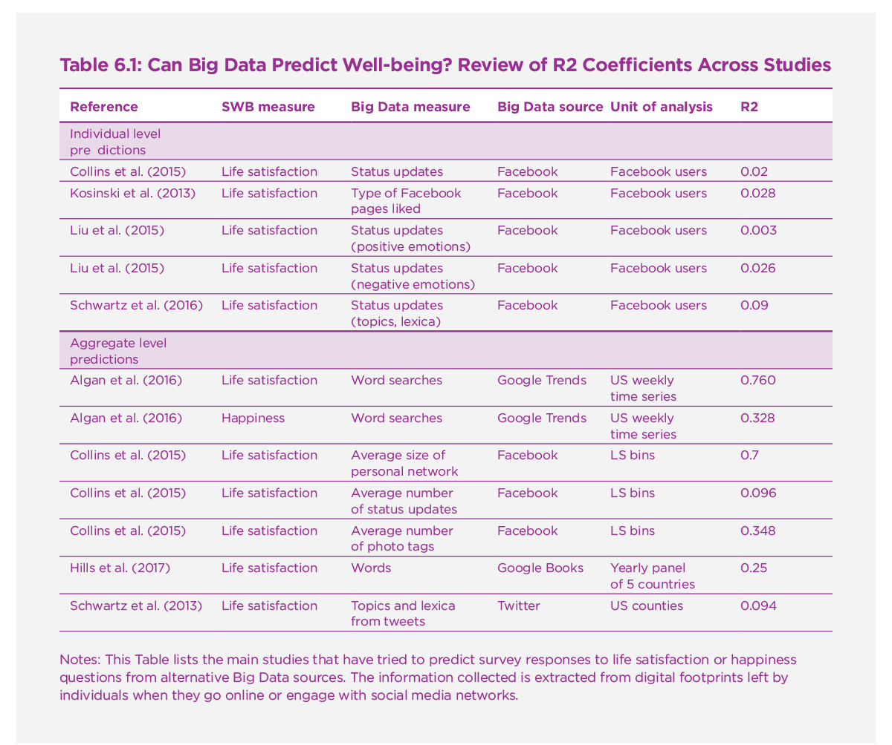
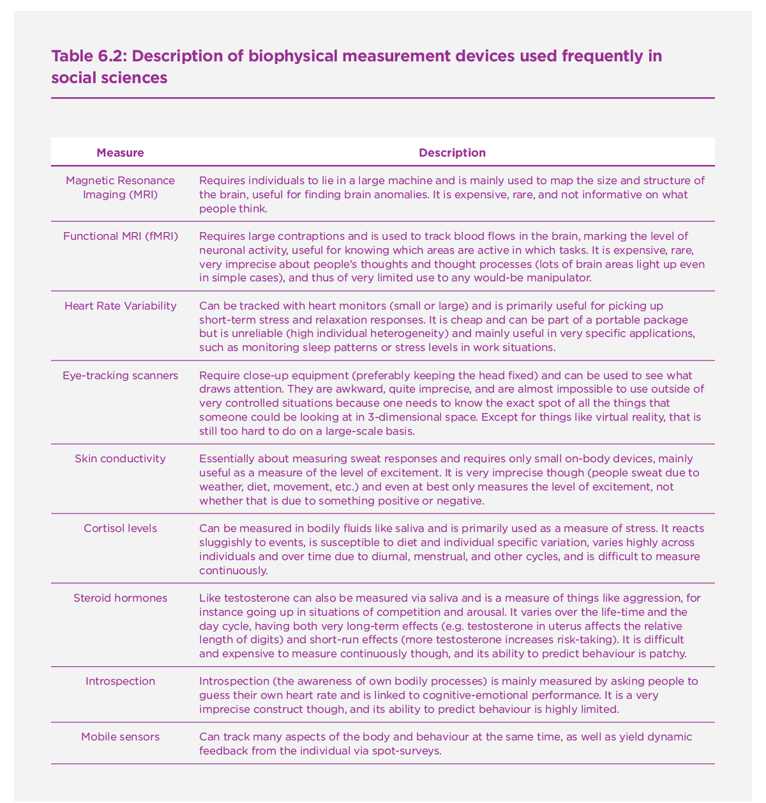
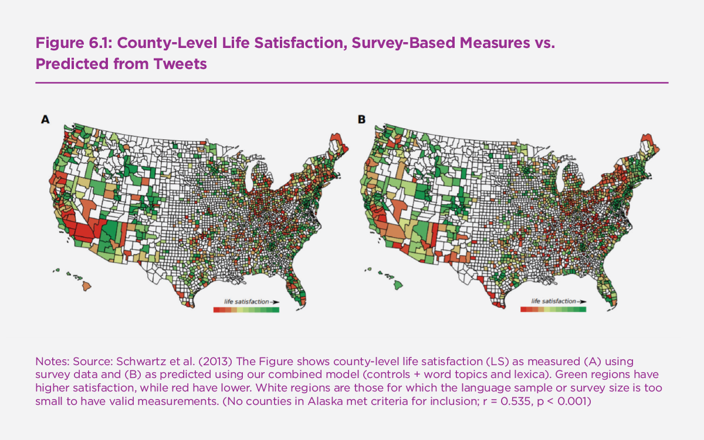
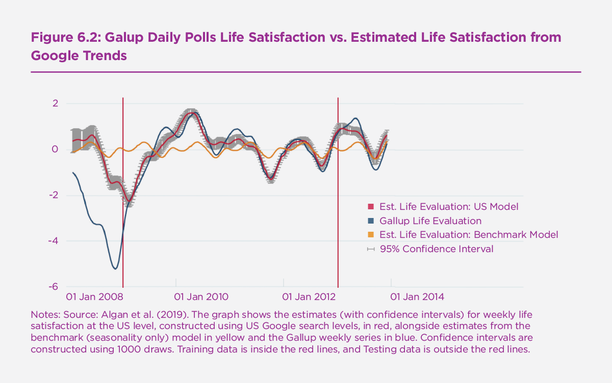
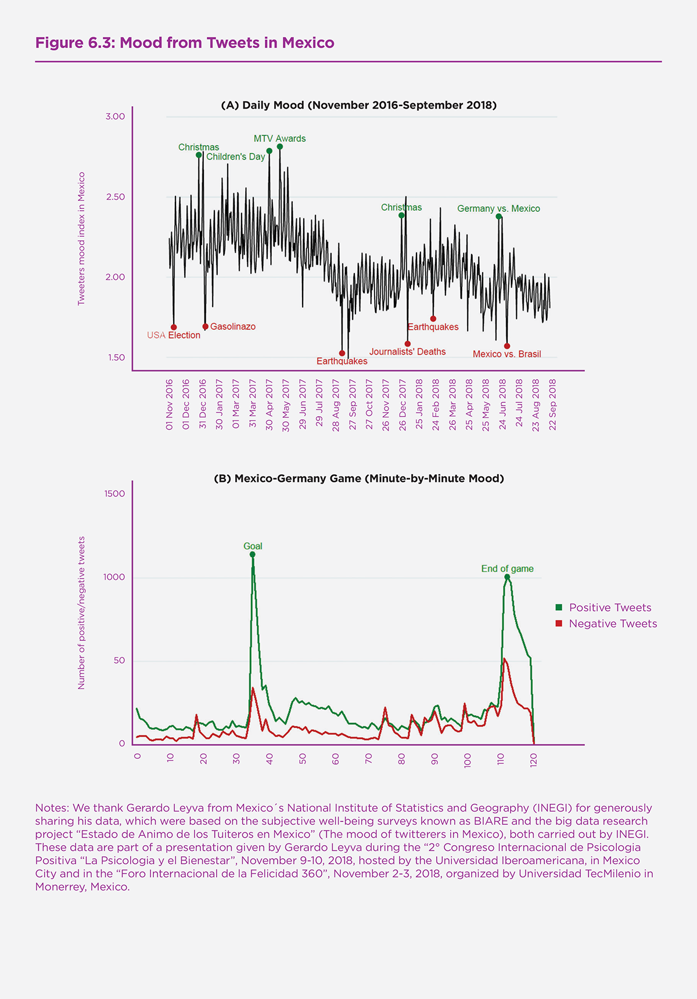
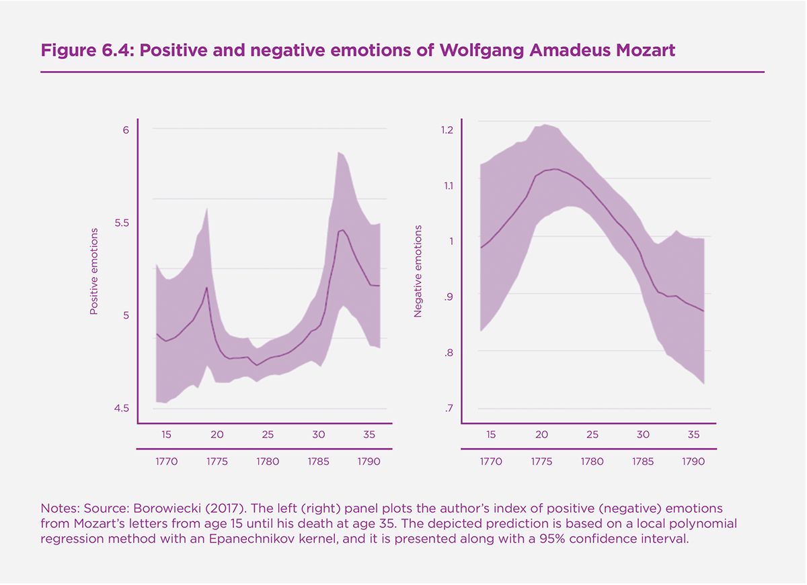

This chapter provides a general review and discussion of the debate surrounding Big Data and well-being. We ask four main questions: Is Big Data very new or very old? How well can we now predict individual and aggregate well-being with Big Data, and to what extent do novel measurement tools complement survey-based measures? Is Big Data responsible for the rising interest in well-being or a threat to it? What are the economic and societal consequences of Big Data, and is there a point to government regulation of ownership, access, and consent?
Quo Vadis?
The availability of information has increased dramatically over the last decades, with roughly a doubling in the market for data storage every two years.[1] The main driver of this has been the spectacular reduction in the costs of gathering and transferring information: cheaper computer chips and faster computers have followed Moore’s law since the 1970s. As a result, there are now billions of databases on the planet with all kinds of information, including lists of genetic markers, inventory, pictures, topography, surveillance videos, administrative datasets and others.[2]
The amount of data on individuals collected is baffling. For instance, whilst it was reported in 2014 that there were thousands of “data brokering" firms buying and selling information on consumers, with the biggest company Axciom alone already having an average of 1500 pieces of information on 200 million Americans, today the amount is 4 times higher at least. As for Google queries, they went from 14 billions per year in 2000 to 1.2 trillions a decade later.
The main business model that pays for the collection and analysis of all this data is advertising: Internet companies and website hosts now sell personalised advertising space in a spot market, an industry worth around 250 billion a year. There is also a smaller market for information about individuals: professional “data broker" firms specialise in collecting data on individuals around the world, selling it to all and sundry. This includes their creditworthiness and measures of their Internet-related activities. Firms are getting increasingly good at matching records from different sources, circumventing privacy laws and guessing the identification behind de-personalised information by cross-referencing financial transactions and recurrent behaviour.
Academic articles and books on these developments are now plentiful. The term used to describe this data explosion and its Big Brother type uses, “Big Data", was cited 40,000 times in 2017 in Google Scholar, about as often as “happiness"! This data explosion was accompanied by the rise of statistical techniques coming from the field of computer science, in particular machine learning. The later provided methods to analyse and exploit these large datasets for prediction purposes, justifying the accumulation of increasingly large and detailed data.[3]
The term Big Data in this chapter will refer to large datasets that contain multiple observations of individuals.[4] Of particular interest is the data gathered on individuals without their “considered consent". This will include all forms of data that one could gather, if determined, about others without their knowledge, such as visual information and basic demographic and behavioural characteristics. Other examples are Twitter, public Facebook posts, the luminescence of homes, property, etc.
Is this information used to say something about well-being, ie Life Satisfaction? How could it be used to affect well-being? And how should it be used? These question concerning Big Data and well-being - where are we, where could we go, and where should we go - will be explored in this chapter.
In the first Section we give a brief history of Big Data and make a broad categorization of all available forms of Big Data and what we know about their usages. In the second Section we ask how well different types of data predict well-being, what the potential use is of novel measurement instruments, and what the most promising forms of data are to predict our individual well-being. We will also look at the question of what the likely effects are of the increased use of Big Data to influence our behaviour. This includes how useful information on well-being itself is to governments and businesses. In the third Section we then review the agency issues surrounding Big Data and well-being: who is in control of this data and what future usage is desirable? How important is considered consent when data usage agreements for commercial purposes become either the default option or a requirement to access services provided by Internet companies?
To illustrate the review, we augment the chapter with twitter data from Mexico and draw on the 2018 WHR calculations from the Gallup World and Daily Polls, and other major data sources. We do this in particular to discuss how much of well-being one can explain the types of information that currently available in the public domain.
1. Big Data: A Brief History
Before the advent of writing and during the long hunter-gatherer period, humans lived in fairly small groups (20-100) of people who knew each other well. Gathering data on those around them, particularly their emotional state, was necessary and normal, as one can gleam from humanity’s empathic abilities and the varied ways in which faces and bodies communicate internal lives to others. It might not have been recorded on usb-drives, but the most intimate details would have been the subject of gossip and observation within the whole group with which humans lived. It would have been vital to know about others’ abilities, health, likes and dislikes, and kinship relations. All that shared data would now have to be called something like “distributed Big Data".
Then came large agricultural hierarchies and their need to control populations, leading to systems of recording. The Sumerian script is the oldest known system of writing, going back at least 6,000 years, and one of its key uses was to keep track of the trades and taxes of those early kingdoms: the business of gathering taxes needed records on who had paid how much and who was yet to pay how much. One might see the hundreds of thousands of early clay tablets of the Sumerian accountants as the first instance of “Big Data": systematic information gathered to control and manipulate a population.
Some 4,000 years ago, in both Egypt and China, the first population censuses were held, recording who lived where and how much their wealth was, with the express purpose of supporting the tax ambitions of the courts of those days. A census was the way to know how much individuals, households, villages, and whole regions could be taxed, both in terms of produce and labour time. The key initial use of Big Data was simply to force individuals into paying taxes. The use of a census to measure and tax a population has stayed with humanity ever since, including the regular censuses of the Romans, the Domesday book ordered by William the Conqueror in 1086 in Britain, up to the present day where censuses are still held in many countries. The modern countries that don’t have a census, usually have permanent population records, an even more sophisticated form of Big Data.
The Bible illustrates these early and still dominant uses of Big Data: the book of Genesis lists the genealogy of the tribe, important for matters of intermarriage and kinship claims; and the book of Exodus mentions the use of a population census to support the tabernacle. Courts and governments were not the only gatherers of Big Data with an interest in recording and controlling the population. Organised religion and many secular organisations collected their own data. Medieval churches in Europe collected information on births, christenings, marriages, wills, and deaths. Partly this was in order to keep track of the daily business of a church, but it also served the purposes of taxation: the accounts were a means of counting the faithful and their wealth. Medieval universities also kept records, for instance of who had earned what qualification, because that is what they sold and they needed to keep track of their sales. As with churches, universities also had internal administrations where they kept track of their possessions, loans, debts, “the academic community", teaching material, etc.
With the advent of large corporations came totally different data, connected to the need to manage long-run relations with many employees: records on the entitlements and behaviour of employees, alongside identifying information (where they could be found, next of kin, etc.). These records were held to allow a smooth operation of organisations and were subsequently used as the basis of income taxation by governments, a good example of where the Big Data gathered by one entity (firms) gets to be used by another (a tax authority) for totally different purposes.
What has been said above can be repeated for many other large organisations throughout the ages: they kept track of the key information they needed to function. Traders needed to keep track of their clients and suppliers. Hospitals and doctors needed to keep track of ailments and individual prescriptions. Inns needed to keep track of their guests. Towns needed to keep track of their rights versus other authorities. Ideologies needed to keep track of actual and potential supporters. Etc. There is hence nothing unusual about keeping records on individuals and their inner lives, without their consent, for the purposes of manipulation. One might even say that nothing on the Internet is as invasive as the monitoring that is likely to have been around before the advent of writing, nor is anything on the internet more manipulative than the monitoring of large empires that pressed their populations into taxes, wars, and large projects (like building the pyramids). Big Data is thus ancient. There is just a lot more of it nowadays that is not run and owned by governments, and an incomparably stronger capacity to collect, classify, analyse, and store it due to the more recent rise in computer power and the rapid development of computer science.
In the present day, governments are still large producers and consumers of Big Data, usually without the consent of the population. The individual records are kept in different parts of the government, but in Western countries they usually include births, marriages, addresses, emails, fingerprints, criminal records, military service records, religion, ethnicity, kinship relations, incomes, key possessions (land, housing, companies), and of course tax records. What is gathered and which institution gathers the data varies by country: whereas in France the data is centrally gathered in a permanent population record and it is illegal to gather data on religion and ethnicity, in the US the various bits of data are gathered by different entities and there is no problem in measuring either religion or ethnicity.[5]
Governments are also in the business of analysing, monitoring, and manipulating our inner lives. This is a well-understood part of the social contract and of the socialisation role of education, state media, military service, national festivities or national ceremonies: successful countries manage to pass on their history, values and loyalties to the next generation.[6] Big Data combined with specific institutions surrounding education, information, taxation or the legal system is then used to mould inner lives and individuals’ identities. Consent in that process is ex post: once individuals are “responsible citizens" they can have some say about this in some countries, but even then only to a limited degree because opting out is often not an option.
In the Internet age, the types and volume of data are truly staggering, with data gathered and analysed for lots of purposes, usually profit-motivated. The generic object is to get a consumer to click on a website, buy a service, sign some document, glance some direction, vote some way, spend time on something, etc. A few examples illustrate the benefits and dangers.
Supermarket chains now gather regular scanner and card-data on the sales to their customers.[7] Partly in order to improve the accuracy of their data, they have loyalty programs where customers get discounts in exchange for private information that allows the supermarkets to link names and addresses to bank cards and other forms of payment. As a result, these companies have information on years of purchases by hundreds of millions of households. One use of that data has been to support “just on time" delivery to individual stores, reducing the necessity for each store to have large and expensive magazines where stocks are held, making products cheaper. That system requires supermarkets to fairly accurately predict what the level of sales will be for thousands of products in stock, which not merely needs good accounting of what is still in stock, but also good forecasting of future demand which requires sophisticated analysis of previous sales. Hence supermarkets know with near-perfect accuracy how much extra ice-cream they will sell in which neighbourhood if the weather gets warmer, and just how many Easter eggs they will sell at what discounted price. One might see this use of Big Data as positive, efficiency improving.
Then there is the market for personalised advertising, also called behavioural targeting. On the basis of their internet-observable history, which will often include their social communication on the internet (including their mobile phone device), it is predicted what advertising is most likely to work on them. Personalised advertising is then sold on a spot market, leading to personalised recommendations (ie one’s previous purchases), social recommendations (what similar people bought), and item recommendations (what the person just sought). Hildebrandt typified the key aspect of this market when she said “profiling shifts the balance of power between those that can afford profiling (…) and those (…) profiled."[8] This advertising market is enormous and has grown fast. Paid media content in 2017 was reportedly worth over 500 billion dollars, and digital advertising was worth some 230 billion in 2017 according to industry estimates. The business model of many internet firms is to offer services for free to anyone in the world, funded by the ads attracted to the traffic on that site. The grand bargain of the Internet is thus free services in exchange for advertising. This is both well-understood and well-known, so one could say that this bargain is made under conditions of considered consent: users of free services (like Facebook) should know that the price of those services is that their personal information is sold for advertising purposes.
There is also a market for more invasive information, where access to goods and services is decided on the basis of that information. An old example from before the internet was credit-worthiness information, which could be bought off banks and other brokers. This was of course important when it came to large purchases, such as a house or setting up a new business. A good modern example is personalised information on the use of online health apps. Individuals visiting free online health apps which give feedback on, for instance, how much someone has run and where, are usually asked to consent to the sale of their information. That information is very useful to, for instance, health insurance companies interested in knowing how healthy the behaviour of someone is. Those health insurance companies will look more favourably on someone known to have a fit body, not buy large volumes of cigarettes and alcohol online, and have a generally considered and healthy lifestyle. It is thus commercially important for health insurance companies to buy such data, and not really an option to ignore it.
This example also shows the ambiguity involved in both consent and the option of staying “off the grid": it is unlikely that everyone using health apps realises the potential uses of the data they are then handing over, and it is not realistic to expect them to wade through hundreds of pages of detailed consent forms wherein all the potential uses would be spelled out. Also, someone who purposefully stays “off the grid" and either actively hides their online behaviour via specialised software or is truly not online at all, will not be unaffected by health profiling activities for the very reason that there is then no profile of them. To a health insurance company, the lack of information is also informative and likely to mean that person has something to hide. Hence, even someone actively concerned with leaving no digital footprints and having very limited data on them online, will be affected without their consent by the activities of others.
Privacy is very difficult to maintain on the Internet because nearly all large internet-site providers use a variety of ways to identify who accesses their websites and what their likely interests are. Websites use cookies, Javascripts, browser Fingerprinting, Behavioural Tracking, and other means to know the moment a person clicks on a website who that person is and what they might want. What helps these websites is the near-uniqueness of the information that a website receives when it is accessed: the IP-address, the Browser settings, the recent search history, the versions of the programs used, and the presence of a variety of added software (Flash, Javascript, cameras, etc.). From that information, internet sites can usually know who has accessed them, which can then be matched to previous information kept on that IP address, bought and sold in a market. Only very Internet-literate individuals can hope to remain anonymous.
The fact that the main use of Big Data on the Internet is to aid advertising should also be somewhat reassuring for those who fear the worst about Big Data: because the advertising market is worth so much, large internet companies are careful not to sell their data for purposes that the population would be highly disapproving of, whether those purposes are legal or not. It is for instance not in the interest of e-bay, Apple, Google, or Samsung to sell information about the porn-viewing habits of their customers to potential employers and romantic partners. These uses are certainly worth something, and on the “Dark Web" (the unauthorised parts of the internet) such information can (reportedly) indeed be bought and sold, but for the “legitimate" part of the market, there is just too much to lose.
How does this relate to well-being?
2. The Contribution of Big Data to well-being Science
Mood analysis is very old, with consumer and producer sentiment recorded in many countries since the 1950s because it predicts economic cycles well.[9] However, the analysis of the well-being of individuals and aggregate well-being is starting to take off as more modern forms of mood analysis develop. These include counting the positive/negative affect of words used in books or any written documents (e.g. Linguistic Inquiry and Word Count); analysis of words used in Twitter feeds, Facebook posts, and other social media data through more or less sophisticated models of sentiment analysis; outright opinion and election polling using a variety of tools (mobile phone, websites, apps). New technologies include Artificial Intelligence analysis of visual, olfactory, sensory, and auditory information. They also include trackable devices that follow individuals around for large parts of the day and sometimes even 24/7, such as fitbits, mobile phones or credit cards.
One may first wonder whether “Big Data" can improve well-being predictions, and help solve what economists have called “prediction policy problems"? [10]
2.1 Predictability of Individual and Aggregate well-being, a benchmark.
Some forms of Big Data will trivially explain well-being exceedingly well: social media posts that inform friends and family of how one feels are explicitly meant to convey information about well-being and will thus have a lot of informational content about well-being to all those with access. Claims that social media can hence predict our well-being exceedingly well thus need not be surprising at all for that is often the point of social media. Nevertheless, it is interesting to have some sense of how much well-being can be deduced from the average individual, which is equivalent to the question how much well-being is revealed by the average user of social media. A similar question arises concerning medical information about individuals: very detailed medical information, which includes assessments of how individuals feel and think about many aspects of their lives, will also explain a lot of their well-being and may even constitute the best measures available. Yet, the question how much one on average would know from typical medical records remains an interesting question.
In order to have some comparison, we first document how available datasets that include direct information on well-being reveal the potential of different types of information to predict well-being. We take the square of the correlation coefficient (R2) as our preferred indicator of predictability.
Andrew Clark et al. (2018) run typical life satisfaction regressions for the United Kingdom, with comparisons for Germany, Australia, and the United States. The main finding is that the R2 does not typically go beyond 15% and even to reach that level needs more than socio-democraphic and economic information (income, gender, age, family circumstances, wealth, employment, etc.) but also needs subjective indicators of health, both physical health and mental health which are both measured using subjective questions. Using the US Gallup Daily poll, we show in the Online Appendix that the same relationship holds there too. The relatively low predictability of life satisfaction at the individual level has long been a known stylised fact in the literature, with early reviews found for instance in the overview book by Michael Argyle et al. (1999) where Michael Argyle also notes the inability of regularly available survey-information to explain more than 15% of the variation in life satisfaction (largely based on World Value Survey data).
Generally, well-being is poorly predicted by information from regular survey questions, but health conditions appear to be the most reliable predictors of well-being. The availability of administrative datasets capturing the health conditions of an entire population - for instance via drug prescriptions - suggests health may be the best proxy available to predict well-being in the future (see also Deaton 2008). Clark et al. (2018) find that mental health explains more variation in well-being than physical health does, also a typical finding that we replicate for the United States (see online Appendix).
What about variation in aggregate well-being? In Chapter II of the WHR 2018, Helliwell et al. (2018) looked at how well differences in average well-being across countries over time can be explained by observabled average statistics. Table 2.1 of that chapter showed a typical cross-country regression wherein 74% of the variance could be explained by no more than a few regressions: GDP per capita, levels of social support, life expectancy, an index of freedom, an index of generosity, and an index of perceptions of corruption.
That chapter also found that the strongest moves up and down were due to very plausible and observable elements: the collapsing economy of Venuzuela showed up in a drop of over 2 points in life expectancy from 2008-2010 to 2015-2017, whilst the recovery from civil war and Ebola in Sierra Leone lead it to increase life satisfaction by over a point. Hence country-variations are strongly predictable. We did our own calculations with the same Daily Gallup dataset (in the Online Appendix) and also found we could explain even higher levels (90%) of variation between US states if one added self-reported health indicators to this set.
Predictability of aggregate well-being thus differs strongly from individual well-being and has different uses. Predicting aggregate well-being can be useful if individual measures are unavailable, for instance due to wars or language barriers.
When individuals originate from various countries, well-being predictions based on standardized variables capturing income, jobs, education levels or even health are about half as powerful as within country predictions (see online Appendix, but also, for instance Claudia Senik (2014) on the cultural dimensions of happines). This is true both for individual-level and country-level predictability.[11] This suggests socio-economic and demographic factors affect subjective well-being in very different ways across cultures and countries at various levels of economic development.
The use of alternative sources of Big Data, like content analysis of tweets, does not necessarily help. In their research, Laura Smith and her co-authors ask whether well-being ‘translates’ on Twitter.[12] They compare English and Spanish tweets and show translation across languages leads to meaningful losses of cultural information. There exists strong heterogeneity across well-being measures. For instance, at the individual level, experienced feelings of happiness are better predicted than reported satisfaction with life as measured by the Cantril ladder. This is the opposite for country-level regressions.
2.2 Can Big Data Improve well-being Predictions?
Standard socio-demographic variables, especially the health conditions of a population, can generate high well-being predictability, at least at a more aggregate level. However, with the rise of digital data collection and improvements in machine learning or textual analysis techniques, alternative sources of information can now be exploited. Standard survey-based measures of happiness could then be used to train prediction models relying on “Big Data" sources, hence allowing for a finer analysis across time and space of the determinants of well-being.[13] Table 6.1 reviews the main studies that have tried to predict life satisfaction or happiness from alternative Big Data sources. The information collected is extracted from digital footprints left by individuals when they go online or engage with social media networks. In this section, we focus on studies proposing the construction of new measures of well-being based on how well they can predict reported happiness and life satisfaction. Hence, Table 6.1 does not reference articles that have used NLP and other computerized text analysis methods for the sole purpose of eliciting emotional content, which we discuss in the next section.
Quite surprisingly, the classical issue of a generally low predictability of individual-level satisfaction remains. The clearest example is a study by Kosinsky and his co-authors that looks at how predictive Facebook user’s page likes are of various individual traits and attributes, including their well-being.[14] Life satisfaction ranks at the bottom of the list in terms of how well it can be predicted, with an R squared of 2.8% only. This does not mean predictive power cannot be improved by adding further controls, but it provides a reasonable account of what should be expected. Strikingly, alternative studies using sentiment analysis of Facebook status updates find similarly low predictive power, from 2% of between-subjects variance explained to a maximum or 9%.[15] These differences are explained by the measure of well-being being predicted, and the model used. Research also showed positive emotions are not significantly correlated to life satisfaction on Facebook, contrary to negative emotions.[16] This suggests social pressure may incite unhappy individuals to pretend they are happier than they really are, which is less likely to be the case for the display of negative emotions.
However, once aggregated, measures extracted from social networks’ textual content have a much stronger predictability. A measure of status updates which yields a 2% R squared in individual-level regressions yields a five times bigger coefficient, close to 10%, when looking at life satisfaction bins.[17] Alternative measures have a much higher predictability like the average number of photo tags (70%) or the average size of users’ network of friends (35%). Looking at a cross-section of counties in the United States, research by Schwartz and co-authors find the topics and lexica from Tweets explains 9.4% of the variance in life satisfaction between-counties.[18] Predictability improves to 28% after including standard controls, as shown in Figure 6.1 which maps county-level life satisfaction from survey data along with county-level life satisfaction predicted using Tweets and controls. This coefficient remains relatively low, which may again be due to the manipulability of positive emotions in social networks.
Research using the emotional content of words in books led to higher predictability for life satisfaction.[19] Using a sample of millions of books published over a period of 40 years in five countries, researchers find an R squared of 25%, which is similar to the predictive power of income or employment across countries in the Gallup World Polls. But the strongest predictability comes from a paper by Yann Algan, Elizabeth Beasley and their co-authors, who showed that daily variation in life satisfaction in the US could be well-predicted (around 76%) by google-trend data on the frequency with which individuals looked for positive terms to do with work, health, and family.[20] Figure 6.2 illustrates these results. The authors find a lower predictability of experienced happiness (about 33%). A clear disadvantage of this method though is that these results would not easily carry over to a different time-frame, or a different language. The authors also use standard regression analysis, while the use of machine learning models (like Lasso regressions) can greatly improve out-of-sample prediction in such cases.
Sentiment analysis via twitter and other searchable Big Data sources may thus lead to a greater ability to map movements in mood, both in the recent past and geographically. The ability to past-cast and now-cast life satisfaction via Google search terms and various other forms of available Big Data may similarly improve our understanding of well-being in the recent past and across areas. This increased ability to predict current and previous levels of mood and life satisfaction might prove very important for research as it reduces the reliance on expensive large surveys. One might start to see papers and government evaluations using derived measures of mood and life satisfaction, tracking the effects of local changes in policy or exogenous shocks, as well as their effects on other regions and times. This might be particularly useful when it comes to social multipliers of events that only directly affect a subset of the population, such as unemployment or identity-specific shocks.
The increased ability to tell current levels of mood and life satisfaction, both at the individual and aggregated level, can also be used for deliberate manipulation: governments and companies can target the low mood / life satisfaction areas with specific policies aimed at those communities (eg more mental health help or more early childcare facilities). Opposition parties might deliberately ‘talk down’ high levels of life satisfaction and blame the government for low levels. Advertisers might tailor their messages to the mood of individuals and constituents. In effect, targeting and impact analyses of various kinds should be expected to improve.
2.3 Big Data as a Complement to Survey-Based well-being Measures
Even if mood extracted from social networks may not fully match variation in survey-based measures of life satisfaction or happiness, they often allow for much more detailed analysis of well-being at the daily level, or even within days. A good example of how massive data sources allow a fuller tracking of the emotional state of a population is given by large-scale Twitter-data on Mexico, courtesy of Gerardo Leyva who kindly allowed us to use the graphs in Figure 6.3 based on the work of his team.[21] Sub-Figure (A) shows how the positive/negative ratio of words varied from day to day in the 2016-2018 period. One can see the large positive mood swings on particular days, like Christmas 2017 or the day that Mexico beat Germany in the Football Word Cup 2018, and the large negatives, like the earthquake in 2017, the loss in the World Cup against Brasil, or the election of Donald Trump in the 2016 US Election.
Sub-Figure (B) shows how the mood changes minute-by-minute during the football match against Germany, with ups when Mexico scores and the end of the match. The main take-aways from these Figures are that one gets quite plausible mood-profiles based on an analysis of Twitter data and that individual events are quite short-lived in terms of their effect on Twitter-mood: the variation is dominated by the short-run, making it hard to say what drives the longer-run variation that you also see in this data. This high daily variability in mood also shows the limits of its usefulness in driving policy or understanding the long-run level of well-being in Mexico.
Another example of the usefulness of alternative metrics of well-being extracted from Big Data sources can be found in recently published research by Borowiecki.[22] The author extracts negative and positive mood from a sample of 1,400 letters written by three famous music composers (Mozart, Beethoven and Liszt). It provides an interesting application of Linguistic Inquiry and Word Count (LIWC) to the question of whether well-being determines creative processes. The research leverages historical panels of the emotional state of these composers over nearly their entire lifetime, and shows poor health or the death of a relative negatively relates to their measure of well-being, while work-related accomplishments positively relates to it. Figure 6.4 shows the positive and negative mood panel of Mozart. Using random life events as instruments in an individual fixed effects model, the author shows negative emotions trigger creativity in the music industry.
Measures extracted from the digital footprints of individuals can also provide a set of alternative metrics for major determinants of well-being available at a much more detailed level (across time and space). One example can be found in previously mentioned research by Algan and their co-authors.[23] They investigate the various domains of well-being explaining variation in overall predicted life satisfaction using Google search data for a list of 554 keywords. From this list of words, they construct 10 composite categories corresponding to different dimensions of life. They find that higher searches for domains like Job Market, Civic Engagement, Healthy Habits, Summer Leisure, and Education and Ideals are consistently associated with higher well-being at the aggregate US level, while Job Search, Financial Security, Health Conditions, and Family Stress domains are negatively associated with well-being.
The fact that “Big Data" often includes time and geographical information (e.g. latitude and longitude) can trigger both new research designs and novel applications to well-being research. For instance, data based on the location of mobile devices can have many applications in the domains of urban planning, which we know matters for things as important to well-being as trust, security or sense of community.[24] Another example can be found in research by Clement Bellet who matches millions of geo-localised suburban houses from Zillow, a large American online real estate company, to reported house and neighborhood satisfaction from the American Housing Surveys.[25] The author finds new constructions which increase house size inequality lower the house satisfaction of existing homeowners through a relative size effect, but no such effect is found on neighborhood satisfaction. Making use of the richness of Big Data, this research also investigates the contribution of spatial segregation and reference groups to the trade-off new movers face between higher status (i.e. a bigger house) and higher neighborhood satisfaction.
Life Satisfaction is of course not the only thing of relevance to our inner lives that can be predicted. Important determinants of well-being can also be predicted. For instance, online ratings have been used to measure interpersonal trust and reciprocity, known to be major drivers of subjective well-being.[26] How much can we know about important determinants of well-being simply from how someone writes, walks, looks, smells, touches, or sounds?
2.4 New Measures and Measurement Tools
To see the future uses of Big Data for well-being, we can look at developments in measurement. Pre-internet, what was measured was largely objective: large possessions, social relations (marriages), births and deaths, forms of accreditation (education, training, citizenship), income flows (employment, welfare, taxes), other-relating activities (crime, court cases, social organisations, large purchases). Measurement in all these cases was usually overt and took place via forms and systems that the population could reasonably be aware of.
Relatively new is data on purely solitary behaviour that identifies individuals, including all things to do with body and mind. There is an individual’s presence in space (where someone is), all manner of health data on processes within, and data on physical attributes, such as fingerprints, retina structure, height, weight, heart rates, brain activity, etc. Some of this information is now gathered as a matter of course by national agencies, starting before birth and continuing way past death, such as height, eye colour, finger prints, physical appearance, and age.
In some countries, like Singapore and China, there are now moves under way to also store facial features of the whole population, which are useful in automatically recognising people from video information and photos, allowing agencies to track the movements of the population by recognising them wherever they are. In the European Union, facial features are automatically used to verify that individuals crossing borders are the same as the photos on their passports.
Fingerprint and iris recognition is nigh perfect, and is already used by governments to check identity. This has uses that are arguably very positive, such as in India where fingerprint and iris-based ID is now used to bypass corruption in the bureaucracy and directly pay welfare recipients and others. It of course also has potential negative uses, including identity theft by copying fingerprints and iris-scan information in India.
The main biophysical measurement devices now in common use in social science research (and hence available to everyone) are the following: MRIs, fMRIs, HRV, eye-scanners, skin conductivity, cortisol, steroid hormones, introspection, and mobile sensors that additionally pick up movement, speech, and posture. Table 6.2 lists the measurement devices currently in wide operation in the social sciences, with their essential characteristics and uses reviewed in the book edited by Gigi Foster (2019). Individually, each of these biophysical markers has been studied for decades, with fairly well-know properties. Some have been around for centuries, such as eye-tracking and heart rate monitoring. Table 6.2 quickly describes them and their inherent limitations.
Whilst these measures have many research uses, they all suffer from high degrees of measurement error, high costs, and require the active participation of the individuals concerned. People know if there is a large device on their heads that tracks their eye-movements. And they can easily mislead most of these measurement devices if they so wished, for instance via their diet and sleep patterns (which affect pretty much all of them). With the exception of non-invasive mobile sensors, which we will discuss later, the possibilities for abuse are thereby limited and their main uses require considered consent.
A new development is the increased ability to recognise identity and emotional state by means of features that can be deduced from a distance: facial features (the eyes-nose triangle), gait, facial expressions, voice, and perhaps even smell.[27] These techniques are sometimes made readily available, for instance when it comes to predicting emotional display from pictures. For instance, FaceReader is a commercial software using an artificial neural network algorithm trained on more than 10,000 faces to predict emotions like anger or happiness with high levels of accuracy (above 90% for these two).[28]
The ability to recognise individuals from afar is now advancing at high speed, with whole countries like Singapore and China investing billions in this ability. Recent patents show that inventors expect to make big money in this field.[29] The ability to recognise identity from a distance is not merely useful for governments trying to track down criminals in their own country or ‘terrorists’ in a country they surveillance covertly. It can be used for positive commercial applications, like mobile phone companies and others to unlock devices of customers who have forgotten their passwords. Yet, it also offers a potential tool for companies and other organisations to link the many currently existing datasets that have a different basis than personal identity, so as to build a profile of whole lives.
Consider this last point more carefully: currently, many forms of Big Data are not organised on the basis of people’s identity in the sense of their real name and unique national identifier (such as their passport details) which determine their rights and duties in their countries. Rather, they are based on the devices used, such as IP-addresses, credit cards, Facebook accounts, email accounts, mobile phone numbers, Instagram IDs, twitter handles, etc. Only rarely can these records be reliably linked to individuals’ true identities, something that will be increasingly difficult for companies when individuals get afraid of being identified and start to deliberately mix and swap devices with others.
Remote recognition might give large organisations, including companies that professionally collect and integrate datasets, the key tool they need to form complete maps of individuals: by linking the information from photos, videos, health records, and voice recordings they might well be able to map individuals to credit cards, IP addresses, etc. It is quite conceivable that Google Street view might at one point be used to confirm where billions of individuals live and what they look like, then coupled with what persons using a particular credit card look like in shop videos. This can then be coupled with readily available pictures, videos, and documents in ample supply on the internet (eg Youtube, facebook, twitter, snapchat, etc.) to not only link records over time, but also across people and countries. The time might thus come that a potential employer is able to buy your personal life story, detailing the holidays you had when you were 3 years old, deduced from pictures your aunt posted on the internet, not even naming you, simply by piecing together your changing features over time.
Remote recognition is thus a potentially powerful new surveillance tool that has a natural increasing-returns-to-scale advantage (accuracy and usefulness increase with data volume), which in turn means it favours big organisations over small ones. It is not truly clear what counter-moves are available to individuals or even whole populations against this new technology. The data can be analysed and stored in particular small countries with favourable data laws, bought anonymously online by anyone willing to pay. And one can see how many individual holders of data, including the videos made by the shopkeepers or the street vendors, have an incentive to sell their data if there is a demand for it, allowing the ‘map of everyone’s life’ to be gathered, rivalling even the data that governments have.
The advances in automatic emotional recognition are less spectacular, but nevertheless impressive. At the latest count, it appears possible for neural-network software that is fed information from videos to recognise around 80% of the emotions on the faces of humans. If one adds to this the potential in analysing human gaits and body postures,[30] the time is soon upon us in which one could remotely build up a picture of the emotions of random individuals with 90% accuracy.
The imperfection in measurement at the individual level, which invalidates it clinically, is irrelevant at the group level where the measurement error washes out. Many of the potential uses of these remote emotion-recognition technologies are thus highly advantageous to the well-being research agenda. They for instance promise to revolutionise momentary well-being measurement of particular groups, such as children in school, prisoners in prison, and passengers on trains. Instead of engaging in costly surveys and non-randomised experiments, the mood of workers, school children, and whole cities and countries can be measured remotely and non-invasively, without the need to identify anyone personally. This might well revolutionise well-being research and applications, leading to less reliance on costly well-being surveys and the ability to ‘calibrate’ well-being surveys in different places and across time with the use of remote emotion measures on whole groups. Remote emotional measurement of whole groups is particularly important once well-being becomes more of a recognised policy tool, giving individuals and their groups an incentive to ‘game’ measures of well-being to influence policy in the desired direction. There will undoubtedly be technical problems involved, such as cultural norms in emotional expression, but the promise is high.
The potential abuses of remote emotional measurement are harder to imagine, precisely because the methods are quite fallible at the individual level, just as with ‘lie detectors’ and other such devices supposed to accurately measure something that is sensitive to people. Individuals can pretend to smile, keep their face deliberately impassive, and practise gaits that mimic what is desired should there be an individual incentive to do so. Hence commercial or government abuse would lie more in the general improvement it would herald in the ability to predict individual and group well-being.
If one then thinks of data involving interactions and devices, one thinks of the whole world of online-behaviour, including twitter, mobile phones, portable devices, and what-have-you. Here too, the new data possibilities have opened new research possibilities as well as possible abuses. Possibly the most promising and dangerous of the new measurement options on interactive behaviour ‘in the real world’ is to equip a whole community, like everyone in a firm, with mobile sensors so as to analyse how individuals react to each other. This is the direction taken by the MIT Media Lab.[31]
The coding of mood from textual information (“sentiment analysis") has led to an important literature in computer science.[32] So far, its empirical applications mainly resulted in predictive modeling of industry-relevant outcomes like stock market prices, rather than the design of well-being enhancing policies.[33] well-being researchers should thus largely benefit from collaborating with computer scientists in the future. Such collaborations should prove fruitful for the latter as well, who often lack knowledge on the distinction between cognitive or affective measures of well-being, which measures should be used to train a predictive model of well-being (besides emotions), and why. Another promising technique is to use speech analysis to analyse emotional content or hierarchical relations, building on the finding that individuals lower in the social pecking order adapt their speech and language to those higher in the social pecking order.[34]
Overall, these methods should lead to major improvements in our capacity to understand and affect the subjective well-being of a population. By equipping and following everyone in a community, researchers and manipulators might obtain a full social hierarchy mapping that is both relative (who is higher) and absolute (average hierarchical differences), yielding social power maps of a type not yet seen before. Analyses of bodily stances and bilateral stress-responses hold similar promise for future measurement. This can be used both positively (eg to detect bullying) and negatively (to enforce bullying).
2.5 Is Big Data Driving the Renewed Interest in well-being?
The explosion of choice that the Internet has enabled is probably a key driver of the use of well-being information: to help them choose something they like from the millions of possibilities on offer, consumers use information on how much people like themselves enjoyed a purchase.
Large internet companies actively support this development and have in many ways led research on well-being in this world. Ebay and Amazon for instance regularly experiment with new forms of subjective feedback that optimise the information about the trustworthiness of sellers and consumers. Nearly all newspapers use a system of likes for their comments to help individuals sift through them and inform themselves of what others found most interesting. Brands themselves are getting increasingly interested in collecting the emotional attitudes linked to their mentions on social networks. Social media monitoring companies like Brandwatch analyse several billion emoticons shared on Twitter or Instagram each year to learn which brands generate the most anger or happiness.
Hence some part of the surge in interest in well-being is because of Big Data: individuals are so bewildered by the huge variety of choice that they turn to the information inherent in the subjective feedback of others to guide their own choices. This subjective feedback is of course subject to distortion and manipulation, and one might well see far more of that in the future. Restaurants may already manipulate their facebook likes and ratings on online restaurant guides (as well as off-line guides that give stars to restaurants), leading to an arms race in terms of sophisticated rating algorithms that screen out suspect forms of feedback.[35]
Yet, the key point is that Big Data gives more value to well-being measurements. New generations of consumers and producers are entirely used to subjective feedback, including its limitations and potential abuse: they have learnt by long exposure what information there is in the subjective feedback of others.
An interesting aspect of the Big Data revolution is that it is largely driven by private organisations, not government. It is Google that collected information on all the streets and dwellings in the world. Facebook owns billions of posts that have information on trillions of photos, videos, and personal statements. Apple has information on the billions of mobile phones and app-movements of its customers, data it can use for advertising. Private companies also collect information on millions of genetic profiles, so as to sell people gene charts that show them where their ancestors came from on the basis of a sample of their own genes. They also have the best data on genealogy, which involves collecting family trees going back centuries, allowing them for instance to trace beneficiaries of wills and unspecified inheritances. Lastly, they collect embarrassing information on bankruptcies or credit worthiness, criminal activities, pornography, defamatory statements, and infidelity, allowing them to blackmail individuals and provide buyers with information about individuals of interest (eg employers or potential partners).
The fact that this data is in private hands and often for sale means academics (and sometimes governments) are very much at a disadvantage because they often lack the best data and the resources: no academic institution had the resources to set up GoogleMaps or Wikipedia, nor the databases of the NSA that track people and communication around the world. In many areas of social science then, the academic community is likely far behind commercial research units inside multinational organisations. Amazon, eBay, and Google probably know more about consumer sentiments and purchasing behaviour than any social scientist in academia. A few leading academic institutions or researchers do sign data sharing agreements with institutions like Nielsen or Facebook. Yet, these agreements are scarce and can lead to problems, like the 2017 scandal of the (ab)use of Facebook profiles by Cambridge Analytica.
However, the fact that private companies gather the bulk of Big Data means we should not confuse the existence of Big Data with an omniscient Big Brother who is able to analyse and coherently use all the information. Individual data packages are held for particular reasons, and data in one list is often like a foreign language to other data, stored in different ways on different machines. This results in marketing companies often buying inaccurate information on customer segments (age, gender, etc.) to data brokers.[36] We should thus not presume that merely because it exists, it is all linked and used to the benefit or harm of the population. It costs resources to link data and analyse them, meaning that only the most lucrative forms of data get matched and used, with a market process discovering those uses gradually over time. An average health centre can for instance easily have 50 separate databases kept up to date, ranging from patient invoices to medicine inventory and pathology scans. The same person can be in those databases several times, as the subject of pathology reports, the patient list of 2015, the invoice list of 2010, the supplier of computer software, the father of another patient, and the partner of yet another. All on separate lists and not recorded in the same format and thus necessarily recognised as one and the same person.
3. Implications: the Economic Perspective
3.1 Price Discrimination, Specialisation and AI
We want to discuss three economic aspects of Big Data: the issue of predictability, insurance and price-discrimination; the general equilibrium aspects of the improved predictability of tastes and abilities; and the macro-consequences of the availability of so much information about humanity.
There are two classic reasons for insurance: one is to ensure individuals against sheer bad luck, and the other is to share risks within a community of different risk profiles. The first is immune to Big Data by construction, but the second is undermined by Big Data. If one were able to predict different risk profiles, then insurance companies would either ask higher premiums of higher risks, or not even insure the high-risk types. The use of Big Data means a reduction in risk-sharing which benefits the well-off (who are generally lower risks).[37]
This is indeed happening in health,[38] but also other insurance markets. Data on age, weight, and self-rated health is predictive of future longevity, health outcomes, and consumption patterns, making it of interest to health insurance companies, travel insurance companies, financial institutions, potential partners, potential employers, and many others.
The degree to which such data is known and can be used by insurance companies depends on the social norms in countries and their legislation. Denmark is very free with such data, offering 5% of their population records to any researcher in the world to analyse, giving access to the health, basic demographics, and family information of individuals, including the details of their birth and their grandparents. Norway is similarly privacy-insensitive with everyone’s tax records available to everyone in the world. Yet, both Denmark and Norway have a free public health service so it actually is not that relevant that one could predict the individual health risk profile of their citizens.
Where private health insurance is more important, the issue of Big Data is more acute. Some countries like Australia forbid health insurance companies from using personal information (including age) to help set their insurance rates.
The use of Big Data to differentiate between low-risk and high-risk is but one example of the general use of Big Data to price-discriminate, a theme more generally discussed by Alessandro Acquisti in his research.[39] When it comes to products that differ in cost by buyer (ie, insurance), that works against the bottom of the market, but when it concerns a homogenous good, it works in favour of the bottom of the market: lower prices are charged of individuals with lower ability to pay, which is inequality reducing. Privacy regulation can thereby hinder favourable price-discrimination. Privacy regulations restricting advertisers’ ability to gather data on Internet users has for instance been argued to reduce the effectiveness of online advertising, as users receive mis-targeted ads.[40]
The main macro-economic effect of Big Data is to reduce market frictions: it is now easier to know when shops have run out of something, where the cheapest bargains are, what the latest technologies are, whom to work with that has the right skills, what the ideal partner looks like, where the nearest fuel station is, etc.
In the longer run, the main effect of reduced frictions is to increase the degree of specialisation in the economy. The increase in specialisation will come from reduced search frictions involved in knowing suppliers and buyers better: companies and individuals can target their services and products better and more locally, which in general is a force for greater specialisation, a change that Durkheim argued was the main economic and social change of the Industrial revolution.
Greater specialisation can be expected to have many effects on social life, some of which are very hard to predict, just as the effects of the Industrial Revolution were hard to foresee in the 19th century. Specialisation reduces the importance of kinship groups in production and increases the reliance on anonymous platforms and formal exchange mechanisms, which increases efficiency but also makes economic relations less intimate. On the other hand, specialisation and increased knowledge of others increases communication over large distances, which is likely to be pacifying and perhaps culturally enriching. Specialisation will favour the production factor that is hardest to increase and most vital to production, which in the past was human capital, but in the future might be physical capital in the form of AI machines. We already see a reduction in the share of labour in national income, and Big Data might increase the importance of sheer computing power and data storage capacity, both likely to favour capital and thus increase inequality whilst reducing median wages. However, this is no more than pure speculation as it is also possible that Big Data will allow the majority of human workers to focus on a skill that is not AI-replicable, perchance human interaction and creativity (though some fear that there is no human skills AI cannot over time acquire).
There will also be macro-effects of Big Data via a totally different avenue: the effect of lots of data available for training the intelligence of non-human entities. It is already the case that Artificial Intelligence techniques use Wikipedia and the whole of the Internet to train, for instance, translation programs from one language into another. It is the case that the internet was used by IMB’s Watson machine to outperform humans at ‘Jeopardy’, a general knowledge quiz. It is the case right now that the internet’s vast store of pictures and videos is being used to train AI machines in the recognition of objects, words, attitudes, and social situations.[41] Essentially, the available knowledge on the lives of billions of humans is improving the intelligence of non-human entities. This might benefit humanity, for instance by allowing individuals from totally different language communities to quickly understand each other, or might be training rivals for political dominance.
It is beyond this chapter to speculate what the end result of these societal forces will be, as one is then pretty much talking about the future of the world, so we simply state here that the explosion in data available to lots of different actors is part and parcel of major economic shifts that seem difficult to contain and hard to predict.
3.2 Privacy and Conclusions
The point of gathering and analysing Big Data is to uncover information about individuals’ tastes, abilities, and choices. The main case wherein that is a clear problem is where individuals want to keep secrets from others.[42] That in turn shows up the issue of ’face’, ie the need for individuals to be seen to adhere to social norms whilst in reality deviating from them.
Big Data potentially uncovers ’faces’: the faces individuals present to some can be unmasked, leading to the possibility of blackmail on a huge scale. One should expect this danger to lead to countermoves. Whilst some companies may hence buy information on the behaviour of the clicks made from an IP address that is then linked to a credit card and then linked to an individual name, the individual can react by setting up random internet behaviour routines specifically designed to create random click-noise. Or an individual can totally hide their internet tracks using specific software to do that. Similarly, individuals can open multiple bank accounts, use various names, switch devices with others, and limit their web presence entirely. The rich will find this easier than the poor, increasing the divide.
The crucial question for the state is when and how to respect the right of individuals to keep their ’faces’ and thus, in some sense, to lie to others. The key aspect of that discussion lies in the reasons for using the faces.
When the reason to keep a face is criminal, the law already mandates everyone with data on the criminal activities on others to bring this to the attention of the authorities. Big Data gatherers and analysers that uncover criminal activities will hence be pressed into becoming law-informers, lest they become complicit in covering up for crimes. When it comes to crime, Big Data will simply be part of the cat-and-mouse aspect of authorities and criminals, which is as old as society itself. Take taxation, which was the original reason for the emergence of Big Data. Sophisticated individuals will now use Big Data to cover up what they earn via the use of anonymous companies, online purchases via foreign countries, and what-have-you. Tax authorities react by mandating more reporting, though with uncertain effect. Even China, which is arguably the country most advanced in constantly keeping its population under electronic surveillance, has great difficulties curtailing its wealthier citizens, whose children often study abroad and who funnel their wealth as well.[43]
There are also non-criminal reasons for people to keep different faces for different audiences though. People can be embarrassed about their looks, their sexuality, their family background, their age, their health, their friends, their previous opinions, and their likes. They might also want to keep their abilities, or lack thereof, secret from employers, friends, and families. Having their personal information known to all could well be devastating for their careers, their love life, and their families.
There is a whole continuum here of cases where ‘face’ might differ from ‘reality’, ranging from self-serving hypocrisy to good manners to maintaining diverging narratives with diverging interest groups. From a societal perspective a decision has to made as to whether it is deemed beneficial or not to help individuals keep multiple faces hidden or not.
The norms on what is considered embarrassing and private differ from country to country. Uncovering faces might be considered a crime in one country and totally normal in another. Having an angry outburst on social media might be considered a healthy expression in one country and an unacceptable transgression in another. Medical information about sexually transmitted diseases (even if deduced from surveillance cameras or Facebook) might scarcely raise an eyebrow in one country and be devastating to reputation in another. Indeed, information that is gathered as a matter of course by officials in one country (ie the gender and ethnicity in one country) might be illegal in another country (eg. France where one is forbidden from storing data on ethnicity). World-wide rules on what information should or should not be subject to privacy legislation (or what should be considered unethical to gather by a researcher) would hence seem futile. Embarrassment and privacy are culture-specific.
Is well-being itself subject to embarrassment? It would seem not: response rates to well-being questions are very high in every country sampled, signifying its universal status as a general signal of the state of someone’s life that is regularly communicated in many ways.
It is not immediate that the existence of embarassment means that privacy is good for society. For instance, an employer who screens out an unhappy person as a potential worker because a happier alternative candidate is likely to be more productive, is not necessarily having a net negative effect on society, even though the person being screened out probably is worse off in the short run.
From a classic economic point of view, the employer who discriminates against the unhappy because they are less productive is perfecting the allocation of resources and is in fact improving the overall allocation of people to jobs, leaving it up to societal redistributive systems to provide a welfare floor (or not) to those whose expected productivity is very low.
The same argument could be run for the formation of romantic partnerships, friends, and even communities: the lack of privacy might simply be overall improving for the operation of society. Yet, it seems likely that the inability of those without great technical ability to maintain multiple faces will favour those already at the top. Whilst the poor might not be able to hide from their management what they really think and might not be able to hide embarrassing histories, those with greater understanding of the new technologies and deeper pockets will likely be able to keep multiple faces. One can for instance already pay internet firms to erase one’s searchable history on the web.
Whilst the scientific well-being case for the well-being benefits and costs of maintaining multiple faces is not well-researched, the UN has nevertheless declared the “Right to Privacy” which consists of the right to withhold information from public view - a basic human right. Article 12 says “No one shall be subjected to arbitrary interference with his privacy, family, home or correspondence, nor to attacks upon his honour and reputation. Everyone has the right to the protection of the law against such interference or attacks."
The UN definition partly seems motivated by the wish for individuals to be free to spend parts of their day without being bothered by others, which is not about multiple faces but more about the limits to the ability of others to impose themselves on others. That is not in principle connected to Big Data and so not of immediate interest here. The ‘face’ aspect of privacy is contained in the reference to “honour and reputation" and is seen as a fundamental Human Right.
If we thus adopt the running hypothesis that holding multiple faces is important in having a well-functioning society, the use of Big Data to violate that privacy and thus attack reputation is a problem.
Privacy regulation at present is not set up for the age of Big Data, if there are laws at all. For instance, the United States doesn’t have a privacy law, though reference is made in the constitution against the use of the government of information that violates privacy. Companies can do what governments cannot in the United States. In the United Kingdom, there is no common law protection of privacy (because various commissions found they could not adequately define privacy), but there is jurisprudence protecting people from having some of their private life exposed (ie, nude pictures illegally obtained cannot be published), and there is a general defence against breaches of confidence which invokes the notion that things can be said or communicated ‘in confidence’. Where confidentiality ends and the right of others to remark on public information begins is not clear.
Finally, is it reasonable to think that individuals will be able to control these developments and to enforce considered consent for any possible use of the Big Data collected? We think this is likely to be naive: in an incredibly complex and highly specialised society, it must be doubted that individuals have the cognitive capacity to understand all the possible uses of Big Data, nor that they would have the time to truly engage with all the informed consent requests that they would then get.
Ones sees this dynamic happening right now in the EU with respect to greater privacy rules that came in mid 2018, forcing large companies to get more consent from their clients. As a result, e-mail inboxes were being flooded with additional information, requiring consumers to read hundreds of pages in the case of large companies, followed by take-it-or-leave-it consent requests which boil down to “consent to our terms or cease using our services". This is exactly the situation that has existed for over a decade now, and it is simply not realistic to expect individuals to wade through all this. The limits of considered consent in our society are being reached, with companies and institutions becoming faster at finding new applications and forms of service than individuals can keep up with.
Hence, the ‘consumer sovereignty’ approach to consent and use of Big Data on the internet seems to us to have a limited lifetime left. The historical solution to the situation where individuals are overwhelmed by organised interests that are far ahead of them technologically and legally is to organise in groups and have professional intermediaries bargain on behalf of the whole group. Unions, professional mediators, and governments are examples of that group-bargaining role. It must thus be expected that in countries with benevolent and competent bureaucracies, it will be up to government regulators to come up with and enforce defaults and limits on the use of Big Data. In countries without competent regulators, individuals will probably find themselves relying on the market to provide them with counter-measures, such as via internet entities that try and take on a pro-bono role in this (such as the Inrupt initiative).
A key problem that even benevolent regulators will face is that individuals on the internet can be directed to conduct their information exchange and purchases anywhere in the world, making it hard for regulators to limit the use of ‘foreign produced’ data. Legal rules might empower foreign providers by applying only to domestic producers of research, which would effectively stimulate out-sourcing of research to other countries, much like Cambridge Analytica was offering manipulation services to dictators in Africa from offices in London.
Concerns for privacy, along with other concerns that national agencies or international charitable groups might have about Big Data and the difficulty of controlling the internet in general, might well lead to more drastic measures than mere privacy regulation. It is hard to predict how urgent the issue will prove to be and what policy levers regulators actually have. The ultimate policy tool for national agencies (or supranational authorities such as the EU) would be to nationalise parts of the internet and then enforce privacy-sensitive architecture upon it. Nationalisation of course would bring with it many other issues, and might arise from very different concerns, such as taxation of internet activities.
It seems likely to us that events will overtake our ability to predict the future in this area quite quickly.
Our main conclusion is then that Big Data is increasing the ability of researchers, governments, companies, and other entities to measure and predict the well-being and the inner life of individuals. This should be expected to increase the ability to analyse the effects on well-being of policies and major changes in general, which should boost the interest and knowledge of well-being. The increase in choices that the information boom is generating will probably increase the use of subjective ratings to inform other customers about goods and activities, or about participants to the “sharing economy" with which they interact.
At the aggregate level, the increased use of Big Data is likely to increase the degree of specialisation in services and products in the whole economy, as well as a general reduction in the ability of individuals to guard their privacy. This in turn is likely to lead to profound societal changes that are hard to foretell, but at current trajectory seem to favour large-scale information collectors over the smaller scale providers and users. This is likely to make individuals less in control of how information about themselves is being used, and of what they are told, or even able to discover, about the communities in which they live.
References
Abrahao, B., P. Parigi, A. Gupta, and K. S. Cook (2017). Reputation offsets trust judgments based on social biases among airbnb users. Proceedings of the National Academy of Sciences 114 (37), 9848–9853.
Acquisti, A., C. Taylor, and L. Wagman (2016). The economics of privacy. Journal of Economic Literature 54 (2), 442–92.
Algan, Y., T. Mayer, and M. Thoenig (2013). The economic incentives of cultural transmission: Spatial evidence from naming patterns across france.
Algan, Y., F. Murtin, E. Beasley, K. Higa, and C. Senik (2019). Wellbeing through the lens of the internet. PloS one 14 (1), e0209562.
Argyle, M., Kahneman, D., Diener, E., & Schwarz, N. (1999). Wellbeing: The foundations of hedonic psychology. Russell Sage Foundation.
Bellet, C. et al. (2017). The paradox of the joneses: Superstar houses and mortgage frenzy in suburban america. CEP Discussion Paper 1462.
Bijlstra, G. and R. Dotsch (2011). Facereader 4 emotion classification performance on images from the radboud faces database. Unpublished manuscript, Department of Social and Cultural Psychology, Radboud University Nijmegen, Nijmegen, The Netherlands.
Bollen, J., H. Mao, and X. Zeng (2011). Twitter mood predicts the stock market. Journal of computational science 2 (1), 1–8.
Borowiecki, K. J. (2017). How are you, my dearest mozart? wellbeing and creativity of three famous composers based on their letters. Review of Economics and Statistics 99 (4), 591–605.
Carroll, C. D., J. C. Fuhrer, and D. W. Wilcox (1994). Does consumer sentiment forecast household spending? if so, why? The American Economic Review 84 (5), 1397–1408.
Clark, A. E., Flèche, S., Layard, R., Powdthavee, N., & Ward, G. (2018). The origins of happiness: the science of wellbeing over the life course. Princeton University Press.
Collins, S., Y. Sun, M. Kosinski, D. Stillwell, and N. Markuzon (2015). Are you satisfied with life?: Predicting satisfaction with life from facebook. In International Conference on Social Computing, Behavioral-Cultural Modeling, and Prediction, pp. 24–33. Springer.
Croy, I. and T. Hummel (2017). Olfaction as a marker for depression. Journal of neurology 264 (4), 631–638.
Danescu-Niculescu-Mizil, C., L. Lee, B. Pang, and J. Kleinberg (2012). Echoes of power: Lan- guage effects and power differences in social interaction. In Proceedings of the 21st international conference on World Wide Web, pp. 699–708. ACM.
Deaton, A. (2008). Income, health, and wellbeing around the world: Evidence from the Gallup World Poll. Journal of Economic perspectives, 22(2), 53-72.
Fisman, R. and S.-J. Wei (2004). Tax rates and tax evasion: evidence from missing imports in china. Journal of Political Economy 112 (2), 471–496.
Foster, G. (2019, ed.). Biophysical Measurement in Experimental Social Science Research. Elsevier.
Frijters, P., with G. Foster (2013), An economic theory of love, groups, power and networks. Cambridge University Press, 431 pg.
Glaeser, E. L., M. S. Kincaid, and N. Naik (2018). Computer vision and real estate: Do looks matter and do incentives determine looks. Technical report, National Bureau of Economic Research.
Goldfarb, A. and C. Tucker (2012). Shifts in privacy concerns. American Economic Review 102 (3), 349–53.
Goldfarb, A. and C. E. Tucker (2011). Privacy regulation and online advertising. Management science 57 (1), 57–71.
Hedman, E., L. Miller, S. Schoen, D. Nielsen, M. Goodwin, and R. Picard (2012). Measuring autonomic arousal during therapy. In Proc. of Design and Emotion, pp. 11–14. Citeseer.
Helliwell, J. F., H. Huang, and S. Wang (2016). New evidence on trust and wellbeing. Technical report, National Bureau of Economic Research.
Helliwell, J. F., H. Huang, Wang, S., and H. Shiplett (2018). International Migration and World Happiness. Chapter II of the World Happiness Report 2018.
Hildebrandt, M. (2006). Profiling: From data to knowledge. Datenschutz und Datensicherheit- DuD 30 (9), 548–552.
Hills, T., E. Proto, and D. Sgroi (2017). Historical analysis of national subjective wellbeing using millions of digitized books. Working Paper
Jianglin, L. (2017). Estimation of the scale of china’s tax evasion caused by hidden econ- omy based on revised cash ratio model. Journal of Hefei University of Technology (Social Sciences) 3, 004.
Kleinberg, J., J. Ludwig, S. Mullainathan, and Z. Obermeyer (2015). Prediction policy prob- lems. American Economic Review 105 (5), 491–95.
Kosinski, M., D. Stillwell, and T. Graepel (2013). Private traits and attributes are predictable from digital records of human behavior. Proceedings of the National Academy of Sciences, 201218772.
Liu, B. (2012). Sentiment analysis and opinion mining. Synthesis lectures on human language technologies 5 (1), 1–167.
Liu, P., W. Tov, M. Kosinski, D. J. Stillwell, and L. Qiu (2015). Do facebook status updates reflect subjective wellbeing? Cyberpsychology, Behavior, and Social Networking 18 (7), 373– 379.
Luca, M. and G. Zervas (2016). Fake it till you make it: Reputation, competition, and yelp review fraud. Management Science 62 (12), 3412–3427.
Neumann, N., C. E. Tucker, and T. Whitfield (2018). How effective is black-box digital consumer profiling and audience delivery?: Evidence from field studies (june 25, 2018). Available at SSRN: https://ssrn.com/abstract=3203131 or http://dx.doi.org/10.2139/ssrn.3203131 .
Proserpio, D., W. Xu, and G. Zervas (2018). You get what you give: theory and evidence of reciprocity in the sharing economy. Quantitative Marketing and Economics 16 (4), 371–407.
Ratti, C., D. Frenchman, R. M. Pulselli, and S. Williams (2006). Mobile landscapes: using location data from cell phones for urban analysis. Environment and Planning B: Planning and Design 33 (5), 727–748.
Schwartz, H. A., J. C. Eichstaedt, M. L. Kern, L. Dziurzynski, R. E. Lucas, M. Agrawal, G. J. Park, S. K. Lakshmikanth, S. Jha, M. E. Seligman, et al. (2013). Characterizing geographic variation in wellbeing using tweets. In ICWSM, pp. 583–591.
Schwartz, H. A., M. Sap, M. L. Kern, J. C. Eichstaedt, A. Kapelner, M. Agrawal, E. Blanco, L. Dziurzynski, G. Park, D. Stillwell, et al. (2016). Predicting individual wellbeing through the language of social media. In Biocomputing 2016: Proceedings of the Pacific Symposium, pp. 516–527. World Scientific.
Senik, C. (2014). The French unhappiness puzzle: The cultural dimension of happiness. Journal of Economic Behavior & Organization, 106, 379-401.
Seresinhe, C. I., T. Preis, and H. S. Moat (2017). Using deep learning to quantify the beauty of outdoor places. Royal Society open science 4 (7), 170170.
Smith, L., S. Giorgi, R. Solanki, J. Eichstaedt, H. A. Schwartz, M. Abdul-Mageed, A. Buffone, and L. Ungar (2016). Does wellbeing ranslate on twitter? In Proceedings of the 2016 Conference on Empirical Methods in Natural Language Processing, pp. 2042–2047.
Tanner, A. (2017). Our bodies, our data: How companies make billions selling our medical records. Beacon Press.
Varian, H. R. (2014). Big data: New tricks for econometrics. Journal of Economic Perspectives 28 (2), 3–28.
Xu, X., R. W. McGorry, L.-S. Chou, J.-h. Lin, and C.-c. Chang (2015). Accuracy of the microsoft kinect for measuring gait parameters during treadmill walking. Gait & posture 42 (2), 145– 151.
Table 6.1: Can Big Data Predict well-being? Review of R2 Coefficients Across Studies

Notes: This Table lists the main studies that have tried to predict survey responses to life satisfaction or happiness questions from alternative Big Data sources. The information collected is extracted from digital footprints left by individuals when they go online or engage with social media networks.
Table 6.2: Description of biophysical measurement devices used frequently in social sciences

Figure 6.1: County-Level Life Satisfaction, Survey-Based Measures vs. Predicted from Tweets

Notes: Source: Schwartz et al. (2013) The Figure shows county-level life satisfaction (LS) as measured (A) using survey data and (B) as predicted using our combined model (controls + word topics and lexica). Green regions have higher satisfaction, while red have lower. White regions are those for which the language sample or survey size is too small to have valid measurements. (No counties in Alaska met criteria for inclusion; r = 0.535, p < 0.001)
Figure 6.2: Galup Daily Polls Life Satisfaction vs. Estimated Life Satisfaction from Google Trends

Notes: Source: Algan et al. (2019). The graph shows the estimates (with confidence intervals) for weekly life satisfaction at the US level, constructed using US Google search levels, in red, alongside estimates from the benchmark (seasonality only) model in yellow and the Gallup weekly series in blue. Confidence intervals are constructed using 1000 draws. Training data is inside the red lines, and Testing data is outside the red lines.
Figure 6.3: Mood from Tweets in Mexico
A) Daily Mood (November 2016 - September 2018)
B) Mexico-Germany Game (Minute-by-Minute Mood)

Notes: We thank Gerardo Leyva from Mexico´s National Institute of Statistics and Geography (INEGI) for generously sharing his data, which were based on the subjective well-being surveys known as BIARE and the big data research project “Estado de Animo de los Tuiteros en Mexico" (The mood of twitterers in Mexico), both carried out by INEGI. These data are part of a presentation given by Gerardo Leyva during the “2° Congreso Internacional de Psicologia Positiva “La Psicologia y el Bienestar", November 9-10, 2018, hosted by the Universidad Iberoamericana, in Mexico City and in the “Foro Internacional de la Felicidad 360”, November 2-3, 2018, organized by Universidad TecMilenio in Monerrey, Mexico.
Figure 6.4: Positive and negative emotions of Wolfgang Amadeus Mozart

Notes: Source: Borowiecki (2017). The left (right) panel plots the author’s index of positive (negative) emotions from Mozart’s letters from age 15 until his death at age 35. The depicted prediction is based on a local polynomial regression method with an Epanechnikov kernel, and it is presented along with a 95% confidence interval.
Endnotes
See https://www.statista.com/statistics/751749/worldwide-data-storage-capacity-and-demand/ ↩︎
Improved internet usage and access have been major drivers of data collection and accessibility: internet users worldwide went from less than 10% of the world population to more than 50% today, with major inequalities across countries. ↩︎
For a review of such methods and how they can complement standard econometrics methods, see Varian (2014) ↩︎
We define Big data as large-scale repeated and potentially multi-sourced information on individuals gathered and stored by an external party with the purpose of predicting or manipulating choice behaviour, usually without the individuals reasonably knowing or controlling the purpose of the data gathering. ↩︎
The question of ethnic-based statistics is an interesting instance where Big Data is sometimes used to circumvent legal constraints, for instance by predicting ethnicity or religion using information on first names in French administrative or firm databases (Algan et al., 2013). ↩︎
Frijters and Foster (2013) ↩︎
This data is now partly available to researchers and led to numerous studies, for instance Nielsen consumer panel and scanner data in the United States. ↩︎
Hildebrandt (2006) ↩︎
Carroll et al. (1994) ↩︎
Kleinberg et al. (2015) ↩︎
The Gallup World Polls survey 1000 individuals each year in 166 countries. ↩︎
Smith et al. (2016) ↩︎
For a discussion, see Schwartz et al. (2013) ↩︎
Kosinski et al. (2013) ↩︎
See Collins et al. (2015), Liu et al. (2015) or Schwartz et al. (2016) ↩︎
Liu et al. (2015) ↩︎
See Collins et al. (2015) ↩︎
Schwartz et al. (2013) ↩︎
Hills et al. (2017) ↩︎
Algan et al. (2019) ↩︎
We thank Gerardo Leyva from Mexico´s National Institute of Statistics and Geography (INEGI) for generously sharing these slides, which were based on the subjective well-being surveys known as BIARE and the big data research project “Estado de Animo de los Tuiteros en Mexico" (The mood of twitterers in Mexico), both carried out by INEGI. These slides are part of a presentation given by Gerardo Leyva (head of research at INEGI) during the “2° Congreso Internacional de Psicología Positiva “La Psicología y el Bienestar”, November 9-10, 2018, hosted by the Universidad Iberoamericana, in Mexico City and in the “Foro Internacional de la Felicidad 360”, November 2-3, 2018, organized by Universidad TecMilenio in Monerrey, México ↩︎
Borowiecki (2017) ↩︎
Algan et al. (2019) ↩︎
Ratti et al. (2006) ↩︎
Bellet (2017) ↩︎
See for instance Proserpio et al. (2018) or Albrahao et al. (2017) for recent applications to AirBnb data. See also Helliwell et al. (2016) for a survey on trust and wellbeing. ↩︎
See Croy and Hummel (2017) ↩︎
See Bijlstra and Dotsch (2011) ↩︎
See Xu et al. (2015) ↩︎
Hedman et al. (2012) ↩︎
See Liu (2012) for a review. ↩︎
Bollen et al. (2011) ↩︎
Danescu et al. (2012) ↩︎
Online platforms actively try to mitigate manipulation concerns. Besides, whether subjected to manipulation or not, these reviews do play a large influential role on economic outcomes like restaurant decisions or customer visits. For a review on user-generated content and social media addressing manipulation concerns, see Luca and Zervas (2016). ↩︎
See Newmann et al. (2018) ↩︎
Looking at refusals to reveal private information on a large-scale market research platform, Goldfarb and Tucker (2012) provides evidence of increasing privacy concerns between 2001 and 2008, driven by contexts in which privacy is not directly relevant, i.e. outside of health or financial products. ↩︎
E.g. Tanner (2017) ↩︎
Acquisti et al. (2016) ↩︎
Goldfarb and Tucker (2011) ↩︎
For instance, recent papers used scenic ratings on internet sites with pictures or hedonic pricing models to build predictive models of what humans found to be scenic (Seresinhe et al. 2017; Glaeser et al. 2018). ↩︎
There are other cultural aspects of the Internet age in general that lie outside of the scope of this chapter, such as the general effect of social media, the increased (ab)use of the public space for attention, and the effects of increasingly being in a Global Village of uniform language, tastes, and status. ↩︎
A popular means of estimating the size of tax-evasion is by looking at the difference in the actual usage of cash versus the official usage of cash, yielding perhaps 25% tax evasion in China (Jianglin, 2017). There have also been attempts to compare reported exports with reported imports (Fisman and Wei, 2004). ↩︎